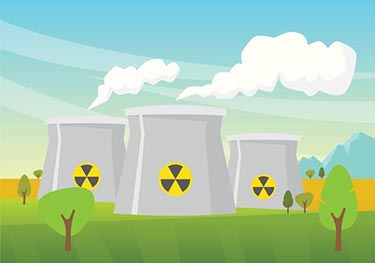

Pied Piper, un danger pour l’environnement
En réalité leur entreprise crée un véritable problème pour la planète . Les data centers et les réseaux laissent une forte empreinte carbone à cause de leurs consommations énergétiques . Mais il faut comprendre que nous aussi en temps qu’utilisateur, en naviguant, nous polluons .
La pollution numérique, c’est quoi ?
" 20 courriels par jour pendant 1 an égale la pollution d'une voiture parcourant 1000 km. "
La pollution numérique , c'est le fait que notre utilisation du numérique laisse une empreinte carbone importante.
En effet, si vous regardez un film sur Netflix, envoyez 15 mails par jour ou si vous avez une dizaine d'onglets de navigation, en permanence ouvert, vous polluez. Il est difficile de prendre conscience qu'une chose aussi immatérielle que le web puisse polluer. Alors qu'une simple recherche sur Google c'est 10 g de CO2 ou encore que 20 courriels par jour pendant 1 an égale la pollution d'une voiture parcourant 1000 km.
{kind=link}

Image représentative de l’écologie dans le Web
L’énergie des data centers et des infrastructures réseaux provoque de la pollution
Lorsque vous regardez un contenu en streaming vous utilisez de la bande passante ce qui sollicite énormément les datas centers qui vont donc demander beaucoup d'énergie et ainsi créer de la pollution.
Il faut savoir que 25 % des émissions de gaz à effet de serre sont dues aux data centers . Dans le cas de nos héros, afin de créer leur entreprise et de stocker des données, ils vont être obligés d'investir dans des centres de données, ce qui va donc créer une pollution. Il y a 4672 centres de données dans le monde , et c'est un chiffre qui ne fait qu'augmenter au fil des années.

Image de Data Center
De plus Bertram Gilfoyle l'architecte réseau de Pied Piper, est un énorme pollueur. En effet les infrastructures réseaux représente 28 % des gaz à effet de serre du milieu du numérique.
Les réseaux vont traiter énormément d'information donc consommée de l'énergie et ainsi beaucoup polluer. C'est très bien illustré dans la série quand on voit Gilfoyle s'occuper des serveurs dans le garage d'Erlich. Il est tout transpirant . On voit donc que les infrastructures réseaux relâche énormément de chaleur .

Bertram Gilfoyle, transpirant car il s’occupe des serveurs de l’entreprise
L’utilisation du numérique, aussi anodine paraît-elle est en réalité un fléau
Les personnages de la série sont des grands fans du numérique et donc vont utiliser de manière peut-être abusive leurs équipements. Étant donné que leurs métiers, c'est la conception de logiciel, ils sont donc obligés de travailler avec des ordinateurs.
Ainsi une forte consommation d'énergie avec les ordinateurs, mais également tous les autres appareils technologies telles que des tablettes, des téléphones… De manière plus général les travailleurs du numérique de la Silicon Valley vont être de gros consommateur d'énergie puisque cela est leurs métiers, et donc ainsi créer une forte pollution numérique.

Les protagonistes à leurs premiers postes de travails
On peut donc voir plusieurs façons de polluer à cause du numérique. C'est un véritable problème, car l'utilisation de ces médias augmente énormément . Il faut donc agir pour limiter tout cela au plus vite ! Dans le prochain article, on va chercher quelles sont les solutions à cette pollution.
La Face Cachée du numérique
Extrait de l’ouvrage, La face cachée du numérique : l'impact environnemental des nouvelles technologies, de Fabrice Flipo, maitre de conférences en philosophie à Telecom & Management SudParis, Michelle Dobré, professeur de sociologie à l’Université de Caen et Marion Michot, ingénieure télécom .
2 % des émissions de gaz à effet de serre, autant que l’aviation
Ces usages ont une « face cachée », invisible pour l'utilisateur : le déploiement d’infrastructures, stations de base (téléphonie), réseaux et centre de données (data centers), et, en encore plus en amont, fabrication des produits, extraction de matières premières. Cette activité est génératrice de gaz à effet de serre.
Quand on entre dans le détail, certaines consommations sont surprenantes. Une étude montre ainsi que la consommation principale des magnétoscopes est... la veille, à 70 %13. Elle fait état d’un amplificateur haut de gamme qui absorbait une puissance de 50 W en veille contre… 67,2 W en fonctionnement. La palme revient à une console de jeu qui absorbe davantage en veille qu’en fonctionnement ! Des experts estiment que ces consommations en veille représentent, dans le résidentiel, entre 5 et 10 TWh : l’équivalent de ce que produit un réacteur nucléaire14 !
Les appareils domestiques ne sont pas les seuls à consommer. Au niveau mondial, les ordinateurs fixes et portables ainsi que leurs périphériques représentent une grosse moitié de la contribution des TICs aux émissions de gaz à effet de serre, le reste étant le fait de l’infrastructure télécom (un petit tiers) et des centres de données (le petit quart restant).
Illustration centrale nucléaire
Le réseau consomme donc autour du quart du total à lui tout seul ! La part des centres de données attire l’attention : 52 %, c’est l’équivalent de 3 centrales nucléaires. À l’échelle de l’Hexagone, l’énergieutilisée par les centres de données représente 1 % de la consommation d’électricité du pays.
À Paris l’un des plus gros clients d’EDF est un centre de données. C’est un immeuble entier rempli d’armoires de serveur, avec, pour le service le plus cher, un doublement de toutes les données, par sécurité, et à la cave plusieurs moteurs de bateau permettant de garantir 7 jours d’autonomie énergétique en cas de panne. L’Europe compte autour de 7 millions de centres de données. Google possède 900 000 serveurs, répartis sur 32 sites. Son plus gros centre de données consomme autant qu'une ville de 200 000 habitants
78 rue de la condamine, façade factice, cachant des centres de données à Paris
La part de consommation énergétique qui revient au réseau et celle qui revient à l’usager final est l’objet de discussions récurrentes entre les quelques experts qui se sont intéressés au sujet. Selon les hypothèses, la consommation des terminaux relativement à l’infrastructure est estimée entre 34 et 75 %15.
Les différences tiennent essentiellement à la définition des périmètres et aux données disponibles. Un auteur peut choisir de classer les « box » dans « le réseau » alors qu’un autre peut les mettre dans la catégorie des terminaux du fait qu’elles se trouvent chez l’usager et non en dehors, voilà tout. Cela ne change rien aux chiffres de consommation en valeur absolue.